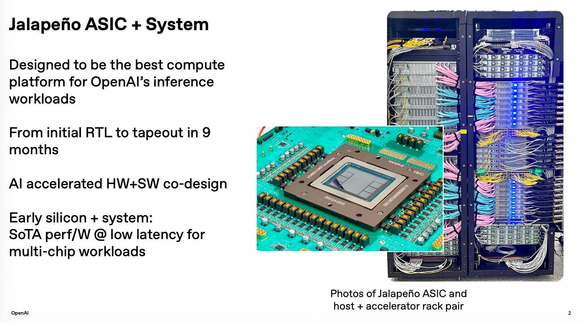
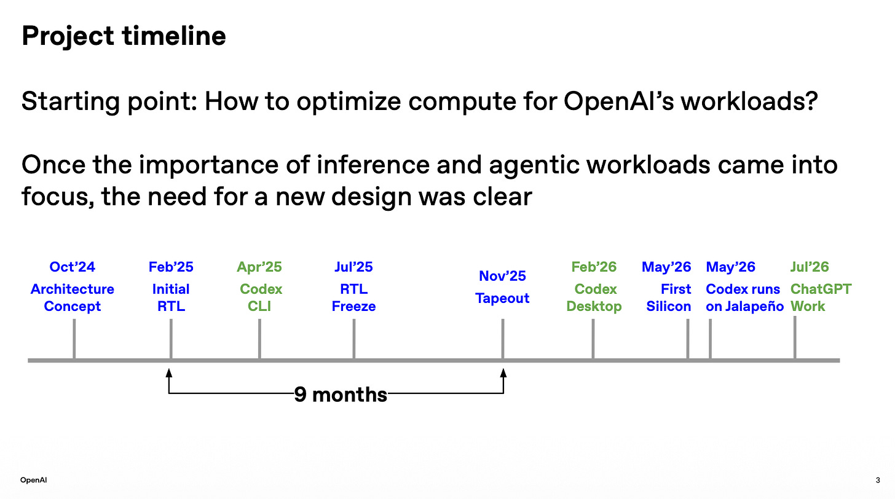
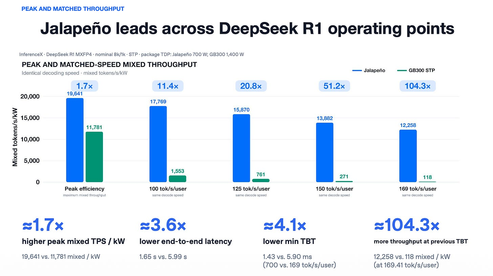
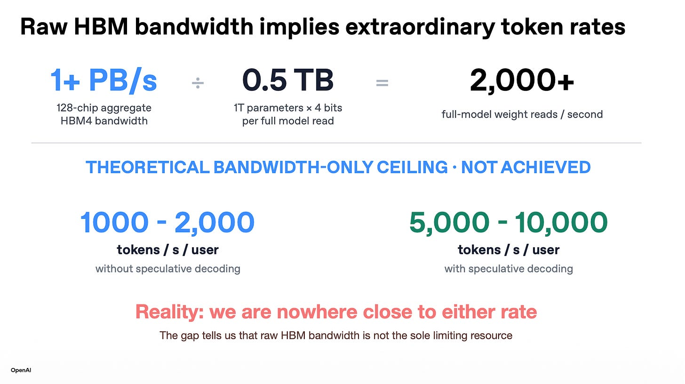
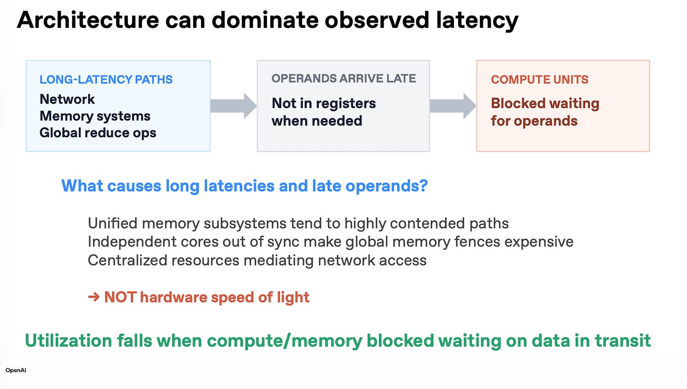
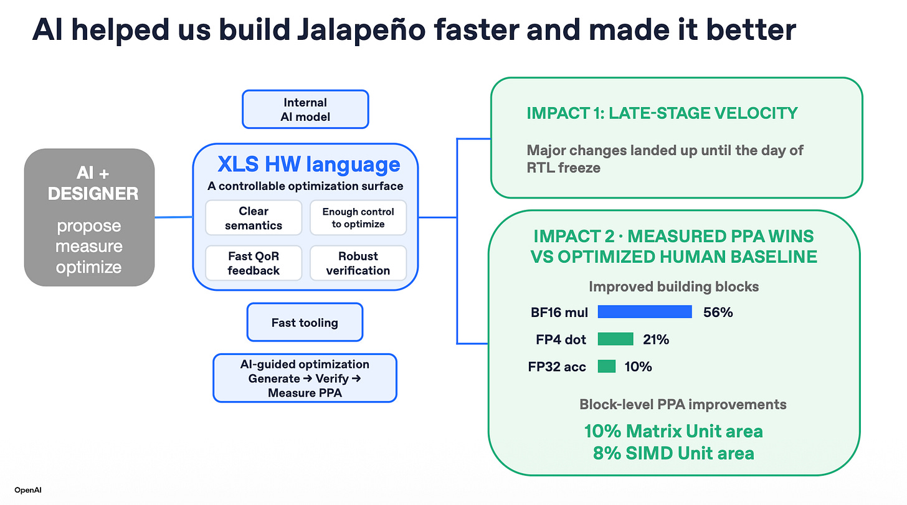
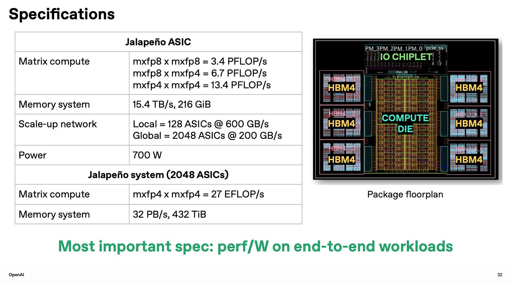
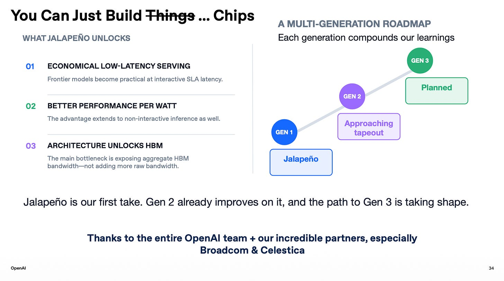

OpenAI在Hot Chips 2026正式公布了自研芯片Jalapeño。硬件副总裁Richard Ho与团队带来完整展示：九个月从白纸到RTL、内存分片架构、面向LLM推理的全栈优化。
本文编译自Tae Kim（Key Context）对本次演讲的要点摘录，全中文呈现，含Q&A完整问答。
演讲人：Richard Ho（OpenAI硬件副总裁）、Ravi Narayanaswami（技术成员）、Chris Leary（技术成员）。周二（2026年8月25日）在Hot Chips大会发表。
Richard领导OpenAI硬件团队，曾参与Google TPU团队；Ravi在Cruise工作十年，也曾任职Google；Chris曾任Google TPU软件负责人。
「Jalapeño芯片来了，它是真的，我们实验室里已经跑起来了。这颗芯片让OpenAI能实现从模型、软件、编译器一路到硅片的全栈优化。我们基本上在九个月内完成了全部RTL实现。」


之所以能这么快，是因为他们从一张白纸起步、全新设计，无需兼容任何旧架构或旧芯片。他们把精力集中在加速OpenAI的工作负载上：而这些工作负载正是大语言模型，因此所有LLM都因此受益。
「只有两件事真正重要：用户等待多长时间，以及每个请求消耗多少能量。」
OSS性能：「每个用户接近每秒1500 token。这曾是SRAM加速器的领域，但HBM根本不是瓶颈。右侧是我们今天以4倍更低延迟提供的最高吞吐。」
世界需要又快又便宜。Jalapeño两者兼备。
DeepSeek性能：「每个用户每秒700 token，这明显是SRAM级别的领域。对当前最高吞吐有5倍更低的延迟。故事是相同的，只是优势变大了：模型越大，优势越大。」

Kimi性能：「我们几乎没有花时间优化Kimi，我想只花了几天的功夫。」

设计理念：「项目启动时我们必须决定：是做一颗重度解码、超优化的芯片，还是一颗既擅长解码、也擅长pre-fill的芯片。我们选择了后者。选择单芯片方案的另一个理由是保持数据局部性。」

「纸面上的FLOPS并不重要，重要的是你在实际工作负载中真正交付给用户的FLOPS。」
「这就引出了Jalapeño架构：一种内存分片（memory-sliced）架构。每个核心都对自己的HBM分片拥有本地视图。」

「这意味着全局内存子系统上不存在争用，但也意味着你必须仔细思考自己的工作负载该如何映射到这台机器上。」
Jalapeño的设计目标是通过把数据放在需要的地方、并在需要时到达，来降低等待时间。架构最小化了芯片空闲时间和数据移动，让数据贴近计算。它是针对LLM推理优化的。

「我们实际构建的是一个专用的集合网络，让各核心能以高性能互相通信。同样，你必须规划好如何映射到机器上。但好处是它经过精心编排，能在你恰好需要时把那些值放进寄存器。」

「想造世界上最好的芯片、又想推进得飞快，只有两种选择：建一支很大的团队，或一支很小的团队。我们选了后者。我们项目过程中发现让这行得通的诀窍：也就是让你在开场看到的超快节奏的真正关键：能运转这套循环。你可以叫它敏捷，也可以叫它协同设计。」

该团队引入了一种全新的硬件编程环境，OpenAI的AI模型在这个环境里编写程序达到了极高的熟练度。
「但借助Sol、Astra这类现代前沿大模型，它在为这种空间架构编写kernel上非常擅长。即便是我们专家调优过的kernel，AI也常常能再榨出一些额外性能。」

「我们想解锁的能力，是真正让它们服务于各种工作负载、交付性能和每瓦性能。因为归根结底，对端到端工作负载而言，唯一重要的事就是如何获得交付出来的每瓦性能。」

「这是多代路线图的第一步。第二代已经在顺利开发中，我们正朝着在数个月内流片（tapeout）推进。整个重点在于这一切都会降低基础设施成本，正如我开场时所说。我真心为团队感到骄傲。我还要特别感谢我们的合作伙伴Broadcom和Celestica，他们是我们能在这里交付这一能力的关键伙伴。」

问：关于九个月流片，这里面有多少是现成的Broadcom IP、多少是你们从零设计的？ 答：芯片大部分是从零设计的。计算die上只有一些接口IP，还有一个IO芯片。正如图中所示，很多接口是现成IP，其余全部是用XLS plus和Verilog重新写的RTL。
问：Michael，来自NVIDIA。想请你详细说说你们的组网方案：scale-up网络用的是ESUN协议还是自定义的？链路是200吉比特还是100吉比特？ 答：我们用的是scale-up以太网协议，200吉比特。谢谢。
问：你们用了什么专用单元、专用存储器之类的专门电路或硅片工艺技巧吗？ 答：用的是标准单元（standard cell）方法学。
问：你们的目标频率是多少？ 答：我们实验室里现有的芯片跑到1.7 GHz，但POR（计划运行点）应该能到1.8。所以留了一点余量。这是持续性能。
参考：https://taekim.substack.com/p/hot-chips-openai-jalapeno-presentation